Last updated: 2026-03-17
Checks: 5 2
Knit directory: Data_Analysis/
This reproducible R Markdown analysis was created with workflowr (version 1.7.2). The Checks tab describes the reproducibility checks that were applied when the results were created. The Past versions tab lists the development history.
The R Markdown is untracked by Git. To know which version of the R
Markdown file created these results, you’ll want to first commit it to
the Git repo. If you’re still working on the analysis, you can ignore
this warning. When you’re finished, you can run
wflow_publish to commit the R Markdown file and build the
HTML.
Great job! The global environment was empty. Objects defined in the global environment can affect the analysis in your R Markdown file in unknown ways. For reproduciblity it’s best to always run the code in an empty environment.
The command set.seed(20260226) was run prior to running
the code in the R Markdown file. Setting a seed ensures that any results
that rely on randomness, e.g. subsampling or permutations, are
reproducible.
Great job! Recording the operating system, R version, and package versions is critical for reproducibility.
Nice! There were no cached chunks for this analysis, so you can be confident that you successfully produced the results during this run.
Using absolute paths to the files within your workflowr project makes it difficult for you and others to run your code on a different machine. Change the absolute path(s) below to the suggested relative path(s) to make your code more reproducible.
| absolute | relative |
|---|---|
| /Users/thanhhuong/R/Data_Analysis | . |
Great! You are using Git for version control. Tracking code development and connecting the code version to the results is critical for reproducibility.
The results in this page were generated with repository version 090db42. See the Past versions tab to see a history of the changes made to the R Markdown and HTML files.
Note that you need to be careful to ensure that all relevant files for
the analysis have been committed to Git prior to generating the results
(you can use wflow_publish or
wflow_git_commit). workflowr only checks the R Markdown
file, but you know if there are other scripts or data files that it
depends on. Below is the status of the Git repository when the results
were generated:
Ignored files:
Ignored: .DS_Store
Ignored: .Rhistory
Ignored: .Rproj.user/
Ignored: analysis/.DS_Store
Ignored: analysis/.Rhistory
Ignored: analysis/images/
Untracked files:
Untracked: DataMiningwithR/
Untracked: analysis/EDC_Huong.Rmd
Untracked: analysis/EDC_Jade.Rmd
Untracked: stats_python_theorie_a_pratique_duverier_djifack_zebaze/
Unstaged changes:
Modified: analysis/ML_2.Rmd
Modified: analysis/index.Rmd
Note that any generated files, e.g. HTML, png, CSS, etc., are not included in this status report because it is ok for generated content to have uncommitted changes.
There are no past versions. Publish this analysis with
wflow_publish() to start tracking its development.
library(MASS) # LDA
library(pls) # PLS
library(rpart) # CART
library(randomForest) # Random Forest
library(NbClust) # Choix du nombre de classes (CAH)
setwd("/Users/thanhhuong/R/Data_Analysis")
gym <- read.table("/Users/thanhhuong/Downloads/M1/Etude de cas/gym_members_exercise_tracking.csv", header = TRUE, sep = ",", dec = ".")
summary(gym) Age Gender Weight..kg. Height..m.
Min. :18.00 Length:973 Min. : 40.00 Min. :1.500
1st Qu.:28.00 Class :character 1st Qu.: 58.10 1st Qu.:1.620
Median :40.00 Mode :character Median : 70.00 Median :1.710
Mean :38.68 Mean : 73.85 Mean :1.723
3rd Qu.:49.00 3rd Qu.: 86.00 3rd Qu.:1.800
Max. :59.00 Max. :129.90 Max. :2.000
Max_BPM Avg_BPM Resting_BPM Session_Duration..hours.
Min. :160.0 Min. :120.0 Min. :50.00 Min. :0.500
1st Qu.:170.0 1st Qu.:131.0 1st Qu.:56.00 1st Qu.:1.040
Median :180.0 Median :143.0 Median :62.00 Median :1.260
Mean :179.9 Mean :143.8 Mean :62.22 Mean :1.256
3rd Qu.:190.0 3rd Qu.:156.0 3rd Qu.:68.00 3rd Qu.:1.460
Max. :199.0 Max. :169.0 Max. :74.00 Max. :2.000
Calories_Burned Workout_Type Fat_Percentage Water_Intake..liters.
Min. : 303.0 Length:973 Min. :10.00 Min. :1.500
1st Qu.: 720.0 Class :character 1st Qu.:21.30 1st Qu.:2.200
Median : 893.0 Mode :character Median :26.20 Median :2.600
Mean : 905.4 Mean :24.98 Mean :2.627
3rd Qu.:1076.0 3rd Qu.:29.30 3rd Qu.:3.100
Max. :1783.0 Max. :35.00 Max. :3.700
Workout_Frequency..days.week. Experience_Level BMI
Min. :2.000 Min. :1.00 Min. :12.32
1st Qu.:3.000 1st Qu.:1.00 1st Qu.:20.11
Median :3.000 Median :2.00 Median :24.16
Mean :3.322 Mean :1.81 Mean :24.91
3rd Qu.:4.000 3rd Qu.:2.00 3rd Qu.:28.56
Max. :5.000 Max. :3.00 Max. :49.84 str(gym)'data.frame': 973 obs. of 15 variables:
$ Age : int 56 46 32 25 38 56 36 40 28 28 ...
$ Gender : chr "Male" "Female" "Female" "Male" ...
$ Weight..kg. : num 88.3 74.9 68.1 53.2 46.1 ...
$ Height..m. : num 1.71 1.53 1.66 1.7 1.79 1.68 1.72 1.51 1.94 1.84 ...
$ Max_BPM : int 180 179 167 190 188 168 174 189 185 169 ...
$ Avg_BPM : int 157 151 122 164 158 156 169 141 127 136 ...
$ Resting_BPM : int 60 66 54 56 68 74 73 64 52 64 ...
$ Session_Duration..hours. : num 1.69 1.3 1.11 0.59 0.64 1.59 1.49 1.27 1.03 1.08 ...
$ Calories_Burned : num 1313 883 677 532 556 ...
$ Workout_Type : chr "Yoga" "HIIT" "Cardio" "Strength" ...
$ Fat_Percentage : num 12.6 33.9 33.4 28.8 29.2 15.5 21.3 30.6 28.9 29.7 ...
$ Water_Intake..liters. : num 3.5 2.1 2.3 2.1 2.8 2.7 2.3 1.9 2.6 2.7 ...
$ Workout_Frequency..days.week.: int 4 4 4 3 3 5 3 3 4 3 ...
$ Experience_Level : int 3 2 2 1 1 3 2 2 2 1 ...
$ BMI : num 30.2 32 24.7 18.4 14.4 ...dim(gym) # 973 individus x 15 variables[1] 973 15gym$Gender <- as.factor(gym$Gender)
gym$Workout_Type <- as.factor(gym$Workout_Type)
gym$Experience_Level <- as.factor(gym$Experience_Level)
str(gym)'data.frame': 973 obs. of 15 variables:
$ Age : int 56 46 32 25 38 56 36 40 28 28 ...
$ Gender : Factor w/ 2 levels "Female","Male": 2 1 1 2 2 1 2 1 2 2 ...
$ Weight..kg. : num 88.3 74.9 68.1 53.2 46.1 ...
$ Height..m. : num 1.71 1.53 1.66 1.7 1.79 1.68 1.72 1.51 1.94 1.84 ...
$ Max_BPM : int 180 179 167 190 188 168 174 189 185 169 ...
$ Avg_BPM : int 157 151 122 164 158 156 169 141 127 136 ...
$ Resting_BPM : int 60 66 54 56 68 74 73 64 52 64 ...
$ Session_Duration..hours. : num 1.69 1.3 1.11 0.59 0.64 1.59 1.49 1.27 1.03 1.08 ...
$ Calories_Burned : num 1313 883 677 532 556 ...
$ Workout_Type : Factor w/ 4 levels "Cardio","HIIT",..: 4 2 1 3 3 2 1 1 3 1 ...
$ Fat_Percentage : num 12.6 33.9 33.4 28.8 29.2 15.5 21.3 30.6 28.9 29.7 ...
$ Water_Intake..liters. : num 3.5 2.1 2.3 2.1 2.8 2.7 2.3 1.9 2.6 2.7 ...
$ Workout_Frequency..days.week.: int 4 4 4 3 3 5 3 3 4 3 ...
$ Experience_Level : Factor w/ 3 levels "1","2","3": 3 2 2 1 1 3 2 2 2 1 ...
$ BMI : num 30.2 32 24.7 18.4 14.4 ...table(gym$Gender)
Female Male
462 511 table(gym$Workout_Type)
Cardio HIIT Strength Yoga
255 221 258 239 table(gym$Experience_Level)
1 2 3
376 406 191 gymQuanti <- gym[, c(
"Age", "Weight..kg.", "Height..m.", "Max_BPM", "Avg_BPM",
"Resting_BPM", "Session_Duration..hours.", "Calories_Burned",
"Fat_Percentage", "Water_Intake..liters.", "Workout_Frequency..days.week.", "BMI"
)]
gymQuali <- gym[, c("Gender", "Workout_Type", "Experience_Level")]t1 <- quantile(gym$Calories_Burned, 1/3)
t2 <- quantile(gym$Calories_Burned, 2/3)
cat("Seuils tertiles : Faible <", t1, "| Modérée", t1, "-", t2, "| Haute >", t2, "\n")Seuils tertiles : Faible < 784 | Modérée 784 - 1006 | Haute > 1006 gym$Calories_Class <- cut(
gym$Calories_Burned,
breaks = c(-Inf, t1, t2, Inf),
labels = c("Faible", "Moderee", "Haute")
)
table(gym$Calories_Class)
Faible Moderee Haute
325 324 324 gp <- gym$Calories_ClassTrois problèmes ont été identifiés sur les 11 variables quantitatives initiales.
L’IMC est un calcul direct à partir du poids et de la taille. Le conserver crée une multicolinéarité artificielle. Sur l’axe morphologique, les corrélations observées étaient très proches entre poids et BMI, ce qui suggère une information redondante. En conséquence, l’IMC est retiré, tandis que le poids et la taille sont conservés.
Les corrélations avec Calories_Burned montrent que
Max_BPM et Resting_BPM sont quasiment non
informatives, alors que Avg_BPM garde une corrélation
exploitable. Les trois variables BPM étant en plus très faiblement
corrélées entre elles, Max_BPM et Resting_BPM
n’apportent ni information utile sur la dépense calorique ni
structuration claire des axes ACP.
Des variables dérivées ont été construites puis testées :
BPM_amplitude = Max_BPM - Resting_BPMBPM_effort = Avg_BPM - Resting_BPMBPM_ratio = Avg_BPM / Max_BPMAucune n’apporte de gain clair. Certaines restent peu corrélées aux
calories, d’autres sont fortement redondantes avec
Avg_BPM.
On passe donc de 11 à 8 variables quantitatives utiles :
BMI, Max_BPM,
Resting_BPMAge, Weight,
Height, Avg_BPM,
Session_Duration, Fat_Percentage,
Water_Intake, Workout_FrequencyUne validation par Random Forest en CV 2-blocs sur 30 runs montre que ce nettoyage ne dégrade pas les performances :
Conclusion : les trois variables retirées n’apportaient pas d’information utile.
cor(gym[, c("Max_BPM", "Avg_BPM", "Resting_BPM")]) Max_BPM Avg_BPM Resting_BPM
Max_BPM 1.00000000 -0.03975144 0.03664748
Avg_BPM -0.03975144 1.00000000 0.05963550
Resting_BPM 0.03664748 0.05963550 1.00000000cor(gym[, c("Max_BPM", "Avg_BPM", "Resting_BPM", "Calories_Burned")])[, "Calories_Burned"] Max_BPM Avg_BPM Resting_BPM Calories_Burned
0.002090016 0.339658667 0.016517951 1.000000000 cor(gym[, c("BMI", "Weight..kg.", "Height..m.")]) BMI Weight..kg. Height..m.
BMI 1.0000000 0.8531577 -0.1594687
Weight..kg. 0.8531577 1.0000000 0.3653212
Height..m. -0.1594687 0.3653212 1.0000000gym$BPM_amplitude <- gym$Max_BPM - gym$Resting_BPM
gym$BPM_effort <- gym$Avg_BPM - gym$Resting_BPM
gym$BPM_ratio <- gym$Avg_BPM / gym$Max_BPM
cor(gym[, c("BPM_amplitude", "BPM_effort", "BPM_ratio", "Calories_Burned")])[, "Calories_Burned"] BPM_amplitude BPM_effort BPM_ratio Calories_Burned
-0.007218653 0.302366926 0.278852946 1.000000000 cor(gym[, c("BPM_effort", "BPM_ratio", "Avg_BPM")])[, "Avg_BPM"]BPM_effort BPM_ratio Avg_BPM
0.8850771 0.8446806 1.0000000 gymX_v1 <- gym[, c(
"Age", "Weight..kg.", "Height..m.", "Max_BPM", "Avg_BPM",
"Resting_BPM", "Session_Duration..hours.", "Fat_Percentage",
"Water_Intake..liters.", "Workout_Frequency..days.week.", "BMI"
)]
gymX_v2 <- gym[, c(
"Age", "Weight..kg.", "Height..m.", "Avg_BPM",
"Session_Duration..hours.", "Fat_Percentage",
"Water_Intake..liters.", "Workout_Frequency..days.week."
)]
colnames(gymX_v1) <- c(
"Age", "Weight", "Height", "Max_BPM", "Avg_BPM", "Resting_BPM",
"Session_Dur", "Fat_Pct", "Water_Intake", "Workout_Freq", "BMI"
)
colnames(gymX_v2) <- c(
"Age", "Weight", "Height", "Avg_BPM",
"Session_Dur", "Fat_Pct", "Water_Intake", "Workout_Freq"
)
gymXCR_v1 <- scale(gymX_v1)
gymXCR_v2 <- scale(gymX_v2)round(apply(gymXCR_v2, 2, mean), 5) Age Weight Height Avg_BPM Session_Dur Fat_Pct
0 0 0 0 0 0
Water_Intake Workout_Freq
0 0 round(apply(gymXCR_v2, 2, sd), 5) Age Weight Height Avg_BPM Session_Dur Fat_Pct
1 1 1 1 1 1
Water_Intake Workout_Freq
1 1 par(mfrow = c(1, 2))
boxplot(gymX_v2, main = "Variables brutes", las = 2, cex.axis = 0.7)
boxplot(gymXCR_v2, main = "Variables centrées-réduites", las = 2, cex.axis = 0.7)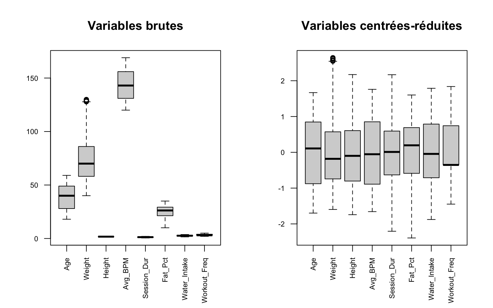
resacp_v1 <- princomp(gymXCR_v1, cor = TRUE, scores = TRUE)
resacp_v2 <- princomp(gymXCR_v2, cor = TRUE, scores = TRUE)
cat("=== V1 (11 vars) - % variance par axe ===\n")=== V1 (11 vars) - % variance par axe ===round(resacp_v1$sdev^2 / sum(resacp_v1$sdev^2) * 100, 2) Comp.1 Comp.2 Comp.3 Comp.4 Comp.5 Comp.6 Comp.7 Comp.8 Comp.9 Comp.10
24.43 17.15 11.32 9.78 9.43 8.96 8.16 4.82 3.17 2.73
Comp.11
0.06 round(cumsum(resacp_v1$sdev^2) / sum(resacp_v1$sdev^2) * 100, 2) Comp.1 Comp.2 Comp.3 Comp.4 Comp.5 Comp.6 Comp.7 Comp.8 Comp.9 Comp.10
24.43 41.58 52.90 62.68 72.11 81.06 89.22 94.04 97.21 99.94
Comp.11
100.00 cat("=== V2 (8 vars) - % variance par axe ===\n")=== V2 (8 vars) - % variance par axe ===round(resacp_v2$sdev^2 / sum(resacp_v2$sdev^2) * 100, 2)Comp.1 Comp.2 Comp.3 Comp.4 Comp.5 Comp.6 Comp.7 Comp.8
32.52 19.68 12.99 12.12 7.92 6.64 4.37 3.76 round(cumsum(resacp_v2$sdev^2) / sum(resacp_v2$sdev^2) * 100, 2)Comp.1 Comp.2 Comp.3 Comp.4 Comp.5 Comp.6 Comp.7 Comp.8
32.52 52.20 65.19 77.31 85.23 91.87 96.24 100.00 corvar_v1 <- cor(gymXCR_v1, resacp_v1$scores[, 1:3])
corvar_v2 <- cor(gymXCR_v2, resacp_v2$scores[, 1:3])
cat("\n=== V1 - Corrélations variables / axes CP1-CP2-CP3 ===\n")
=== V1 - Corrélations variables / axes CP1-CP2-CP3 ===round(corvar_v1, 3) Comp.1 Comp.2 Comp.3
Age 0.009 0.038 0.011
Weight -0.568 -0.789 -0.069
Height -0.370 -0.186 0.832
Max_BPM -0.043 -0.114 -0.137
Avg_BPM -0.008 -0.008 -0.067
Resting_BPM 0.016 0.040 0.065
Session_Dur -0.642 0.549 -0.252
Fat_Pct 0.837 -0.265 -0.050
Water_Intake -0.757 -0.114 0.316
Workout_Freq -0.612 0.544 -0.268
BMI -0.408 -0.731 -0.531cat("\n=== V2 - Corrélations variables / axes CP1-CP2-CP3 ===\n")
=== V2 - Corrélations variables / axes CP1-CP2-CP3 ===round(corvar_v2, 3) Comp.1 Comp.2 Comp.3
Age 0.003 0.039 0.745
Weight -0.383 -0.673 -0.003
Height -0.389 -0.670 -0.029
Avg_BPM -0.004 0.016 0.689
Session_Dur -0.719 0.508 -0.033
Fat_Pct 0.875 -0.081 -0.007
Water_Intake -0.741 -0.370 0.072
Workout_Freq -0.687 0.519 -0.035corvar_v1[order(corvar_v1[, 1], decreasing = TRUE), ] Comp.1 Comp.2 Comp.3
Fat_Pct 0.836711040 -0.264939662 -0.04962480
Resting_BPM 0.016001606 0.040248384 0.06479652
Age 0.009125833 0.038082517 0.01107254
Avg_BPM -0.008010234 -0.008075383 -0.06713909
Max_BPM -0.043065970 -0.114011593 -0.13749607
Height -0.369653567 -0.185750381 0.83242716
BMI -0.407616872 -0.730922607 -0.53053136
Weight -0.567672557 -0.788777279 -0.06918204
Workout_Freq -0.611712132 0.543720420 -0.26783076
Session_Dur -0.641512601 0.548839025 -0.25243916
Water_Intake -0.757389148 -0.113590612 0.31644277corvar_v1[order(corvar_v1[, 2], decreasing = TRUE), ] Comp.1 Comp.2 Comp.3
Session_Dur -0.641512601 0.548839025 -0.25243916
Workout_Freq -0.611712132 0.543720420 -0.26783076
Resting_BPM 0.016001606 0.040248384 0.06479652
Age 0.009125833 0.038082517 0.01107254
Avg_BPM -0.008010234 -0.008075383 -0.06713909
Water_Intake -0.757389148 -0.113590612 0.31644277
Max_BPM -0.043065970 -0.114011593 -0.13749607
Height -0.369653567 -0.185750381 0.83242716
Fat_Pct 0.836711040 -0.264939662 -0.04962480
BMI -0.407616872 -0.730922607 -0.53053136
Weight -0.567672557 -0.788777279 -0.06918204corvar_v1[order(corvar_v1[, 3], decreasing = TRUE), ] Comp.1 Comp.2 Comp.3
Height -0.369653567 -0.185750381 0.83242716
Water_Intake -0.757389148 -0.113590612 0.31644277
Resting_BPM 0.016001606 0.040248384 0.06479652
Age 0.009125833 0.038082517 0.01107254
Fat_Pct 0.836711040 -0.264939662 -0.04962480
Avg_BPM -0.008010234 -0.008075383 -0.06713909
Weight -0.567672557 -0.788777279 -0.06918204
Max_BPM -0.043065970 -0.114011593 -0.13749607
Session_Dur -0.641512601 0.548839025 -0.25243916
Workout_Freq -0.611712132 0.543720420 -0.26783076
BMI -0.407616872 -0.730922607 -0.53053136corvar_v2[order(corvar_v2[, 1], decreasing = TRUE), ] Comp.1 Comp.2 Comp.3
Fat_Pct 0.874900782 -0.08075192 -0.007081719
Age 0.002928687 0.03865107 0.745239480
Avg_BPM -0.003924323 0.01568500 0.689341211
Weight -0.383019553 -0.67335473 -0.002796899
Height -0.388569504 -0.67011601 -0.029169973
Workout_Freq -0.687332026 0.51856538 -0.034797337
Session_Dur -0.719386665 0.50781530 -0.033205416
Water_Intake -0.740802912 -0.36993071 0.072208491corvar_v2[order(corvar_v2[, 2], decreasing = TRUE), ] Comp.1 Comp.2 Comp.3
Workout_Freq -0.687332026 0.51856538 -0.034797337
Session_Dur -0.719386665 0.50781530 -0.033205416
Age 0.002928687 0.03865107 0.745239480
Avg_BPM -0.003924323 0.01568500 0.689341211
Fat_Pct 0.874900782 -0.08075192 -0.007081719
Water_Intake -0.740802912 -0.36993071 0.072208491
Height -0.388569504 -0.67011601 -0.029169973
Weight -0.383019553 -0.67335473 -0.002796899corvar_v2[order(corvar_v2[, 3], decreasing = TRUE), ] Comp.1 Comp.2 Comp.3
Age 0.002928687 0.03865107 0.745239480
Avg_BPM -0.003924323 0.01568500 0.689341211
Water_Intake -0.740802912 -0.36993071 0.072208491
Weight -0.383019553 -0.67335473 -0.002796899
Fat_Pct 0.874900782 -0.08075192 -0.007081719
Height -0.388569504 -0.67011601 -0.029169973
Session_Dur -0.719386665 0.50781530 -0.033205416
Workout_Freq -0.687332026 0.51856538 -0.034797337cat("\nFocus CP2 :\n")
Focus CP2 :cat("V1 - Weight:", round(corvar_v1["Weight", 2], 3),
" Height:", round(corvar_v1["Height", 2], 3),
" BMI:", round(corvar_v1["BMI", 2], 3), "\n")V1 - Weight: -0.789 Height: -0.186 BMI: -0.731 cat("V2 - Weight:", round(corvar_v2["Weight", 2], 3),
" Height:", round(corvar_v2["Height", 2], 3), "\n")V2 - Weight: -0.673 Height: -0.67 gymDF_v1 <- data.frame(
gymXCR_v1,
Gender = gym$Gender,
Workout_Type = gym$Workout_Type,
Exp_Level = gym$Experience_Level,
Calories_Class = gp
)
gymDF_v2 <- data.frame(
gymXCR_v2,
Gender = gym$Gender,
Workout_Type = gym$Workout_Type,
Exp_Level = gym$Experience_Level,
Calories_Class = gp
)
set.seed(123)
nbrun <- 30
taux_v1 <- taux_v2 <- rep(NA, nbrun)
for (i in 1:nbrun) {
idx_test <- sample(1:nrow(gymDF_v1), size = floor(nrow(gymDF_v1) / 2))
idx_app <- setdiff(1:nrow(gymDF_v1), idx_test)
rf1 <- randomForest(Calories_Class ~ ., data = gymDF_v1[idx_app, ], ntree = 200)
rf2 <- randomForest(Calories_Class ~ ., data = gymDF_v2[idx_app, ], ntree = 200)
taux_v1[i] <- mean(predict(rf1, newdata = gymDF_v1[idx_test, ]) == gp[idx_test])
taux_v2[i] <- mean(predict(rf2, newdata = gymDF_v2[idx_test, ]) == gp[idx_test])
}
cat("\n=== VALIDATION RF - CV 2-blocs, 30 runs ===\n")
=== VALIDATION RF - CV 2-blocs, 30 runs ===cat("V1 (11 vars) :", round(mean(taux_v1) * 100, 2), "% (+/-", round(sd(taux_v1) * 100, 2), "%)\n")V1 (11 vars) : 84.93 % (+/- 2.36 %)cat("V2 ( 8 vars) :", round(mean(taux_v2) * 100, 2), "% (+/-", round(sd(taux_v2) * 100, 2), "%)\n")V2 ( 8 vars) : 86.77 % (+/- 2.22 %)par(mfrow = c(1, 1))
boxplot(
list("V1 - 11 vars" = taux_v1, "V2 - 8 vars" = taux_v2),
main = "RF CV : V1 vs V2",
ylab = "Taux bien classés",
col = c("lightblue", "lightcoral")
)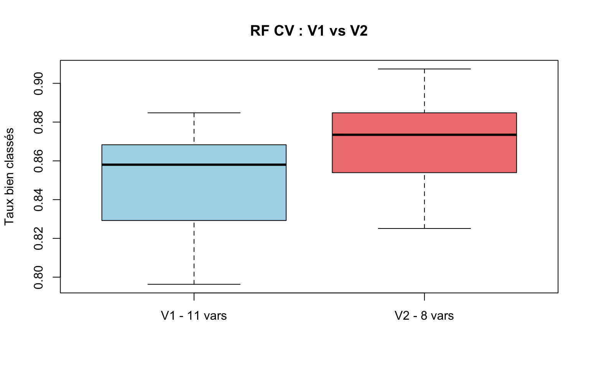
L’objectif de cette comparaison est de vérifier si la simplification du jeu de variables améliore la lisibilité factorielle sans perte de performance prédictive.
Les résultats attendus sont les suivants :
gymX <- gym[, c(
"Age", "Weight..kg.", "Height..m.", "Avg_BPM",
"Session_Duration..hours.", "Fat_Percentage",
"Water_Intake..liters.", "Workout_Frequency..days.week."
)]
colnames(gymX) <- c(
"Age", "Weight", "Height", "Avg_BPM",
"Session_Dur", "Fat_Pct", "Water_Intake", "Workout_Freq"
)t1 <- quantile(gym$Calories_Burned, 1/3)
t2 <- quantile(gym$Calories_Burned, 2/3)
cat("Seuils : Faible <", t1, "| Modérée", t1, "-", t2, "| Haute >", t2, "\n")Seuils : Faible < 784 | Modérée 784 - 1006 | Haute > 1006 gym$Calories_Class <- cut(
gym$Calories_Burned,
breaks = c(-Inf, t1, t2, Inf),
labels = c("Faible", "Moderee", "Haute")
)
table(gym$Calories_Class)
Faible Moderee Haute
325 324 324 gp <- gym$Calories_ClassgymXCR <- scale(gymX, center = TRUE, scale = TRUE)
par(mfrow = c(1, 2))
boxplot(gymX, main = "Variables brutes (8 vars)", las = 2, cex.axis = 0.8)
boxplot(gymXCR, main = "Variables CR (8 vars)", las = 2, cex.axis = 0.8)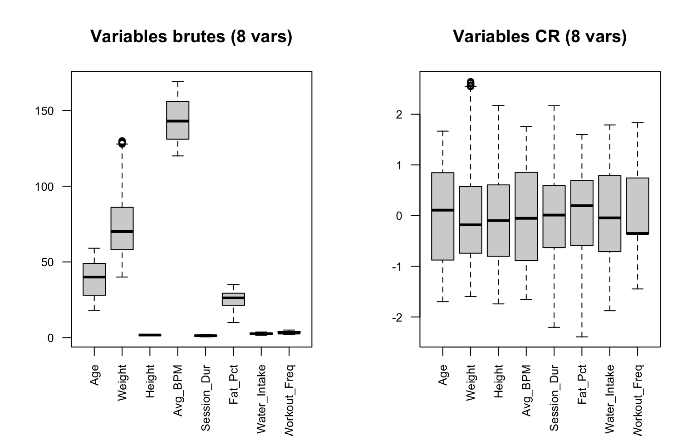
vecvar <- apply(gymXCR, 2, var)
gymXCRsel <- gymXCR[, vecvar > 0.0001]
cat("Variables conservées après filtre variance :", ncol(gymXCRsel), "\n")Variables conservées après filtre variance : 8 par(mfrow = c(1, 1))
resacp <- princomp(gymXCRsel, cor = TRUE, scores = TRUE)
summary(resacp)Importance of components:
Comp.1 Comp.2 Comp.3 Comp.4 Comp.5
Standard deviation 1.6130397 1.2547342 1.0193182 0.9846990 0.79612631
Proportion of Variance 0.3252371 0.1967948 0.1298762 0.1212040 0.07922714
Cumulative Proportion 0.3252371 0.5220319 0.6519081 0.7731121 0.85233923
Comp.6 Comp.7 Comp.8
Standard deviation 0.72875135 0.59143001 0.54810419
Proportion of Variance 0.06638482 0.04372368 0.03755228
Cumulative Proportion 0.91872404 0.96244772 1.00000000round(cumsum(resacp$sdev^2) / sum(resacp$sdev^2) * 100, 2)Comp.1 Comp.2 Comp.3 Comp.4 Comp.5 Comp.6 Comp.7 Comp.8
32.52 52.20 65.19 77.31 85.23 91.87 96.24 100.00 par(mfrow = c(1, 1))
barplot(
resacp$sdev^2,
names.arg = paste0("CP", 1:ncol(gymXCRsel)),
main = "Valeurs propres (éboulis)",
ylab = "Variance expliquée",
col = "steelblue",
las = 2
)
abline(h = 1, col = "red", lty = 2)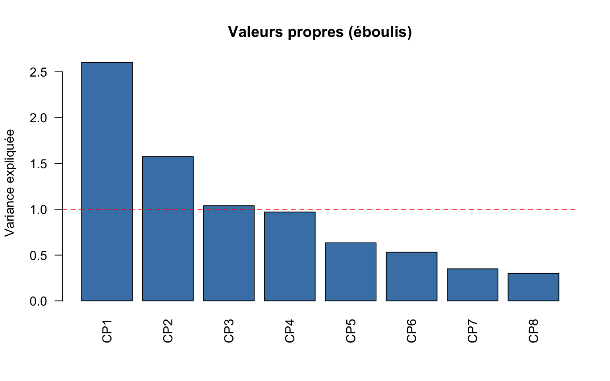
round(cumsum(resacp$sdev^2) / sum(resacp$sdev^2) * 100, 2)Comp.1 Comp.2 Comp.3 Comp.4 Comp.5 Comp.6 Comp.7 Comp.8
32.52 52.20 65.19 77.31 85.23 91.87 96.24 100.00 saporta <- 1 + 2 * sqrt((ncol(gymXCRsel) - 1) / (nrow(gymXCRsel) - 1))
cat("Critère de Saporta :", round(saporta, 3), "\n")Critère de Saporta : 1.17 Dans la version nettoyée à 8 variables, les résultats attendus sont de l’ordre de :
Le cumul atteint environ 65.2% sur les trois premiers axes et 77.3% sur les quatre premiers.
Les règles conduisent aux constats suivants :
Le compromis retenu est de conserver 3 axes, qui résument déjà une part substantielle de l’information tout en restant interprétables.
Par rapport à la version à 11 variables, le nettoyage améliore clairement la concentration de l’information sur les premiers axes. C’est le vrai intérêt du nettoyage. Retirer le bruit ne fait pas perdre de signal, cela évite juste de le noyer.
pct1 <- round(resacp$sdev[1]^2 / sum(resacp$sdev^2) * 100, 1)
pct2 <- round(resacp$sdev[2]^2 / sum(resacp$sdev^2) * 100, 1)
pct3 <- round(resacp$sdev[3]^2 / sum(resacp$sdev^2) * 100, 1)
pcts <- c(pct1, pct2, pct3)
plot_acp_plan <- function(ax1, ax2, couleurs, titre, legende_labels, legende_cols, pcts) {
plot(
resacp$scores[, ax1], resacp$scores[, ax2],
type = "n", asp = 1,
main = titre,
xlab = paste0("CP", ax1, " (", pcts[ax1], "%)"),
ylab = paste0("CP", ax2, " (", pcts[ax2], "%)")
)
abline(h = 0, v = 0, lty = 2, col = "grey")
points(resacp$scores[, ax1], resacp$scores[, ax2], col = couleurs, pch = 16, cex = 0.7)
legend(
"bottomleft",
legend = legende_labels,
col = legende_cols,
pch = 16,
cex = 0.6,
pt.cex = 0.7,
bty = "n",
x.intersp = 0.5,
y.intersp = 0.7,
bg = "white"
)
}cols_gender <- c("Female" = "coral", "Male" = "steelblue")
couleurs_gender <- cols_gender[gym$Gender]
par(mfrow = c(1, 2))
plot_acp_plan(1, 2, couleurs_gender,
"Genre - Plan CP1-CP2",
c("Femme", "Homme"), c("coral", "steelblue"), pcts)
plot_acp_plan(1, 3, couleurs_gender,
"Genre - Plan CP1-CP3",
c("Femme", "Homme"), c("coral", "steelblue"), pcts)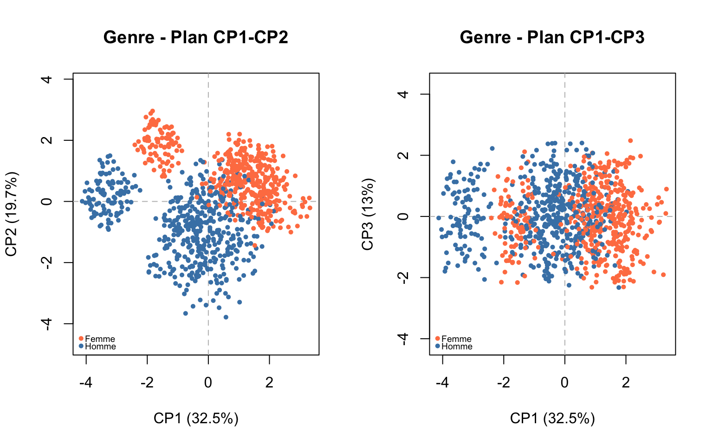
Sur le plan CP1-CP2, CP2 sépare nettement les genres. Après
nettoyage, cet axe devient un axe morphologique plus pur. Sans BMI,
Weight et Height contribuent de façon plus
symétrique, ce qui est bien plus cohérent.
Sur le plan CP1-CP3, CP3 devient un axe dominé par Age
et Avg_BPM. Les individus plus âgés et avec un BPM moyen
plus élevé se projettent plus haut sur cet axe. La version nettoyée met
donc en évidence une structure physiologique que la version à 11
variables masquait partiellement.
cols_wt <- c("Cardio" = "green3", "HIIT" = "red", "Strength" = "blue", "Yoga" = "purple")
couleurs_wt <- cols_wt[gym$Workout_Type]
par(mfrow = c(1, 2))
plot_acp_plan(1, 2, couleurs_wt,
"Type d'entraînement - Plan CP1-CP2",
names(cols_wt), cols_wt, pcts)
plot_acp_plan(1, 3, couleurs_wt,
"Type d'entraînement - Plan CP1-CP3",
names(cols_wt), cols_wt, pcts)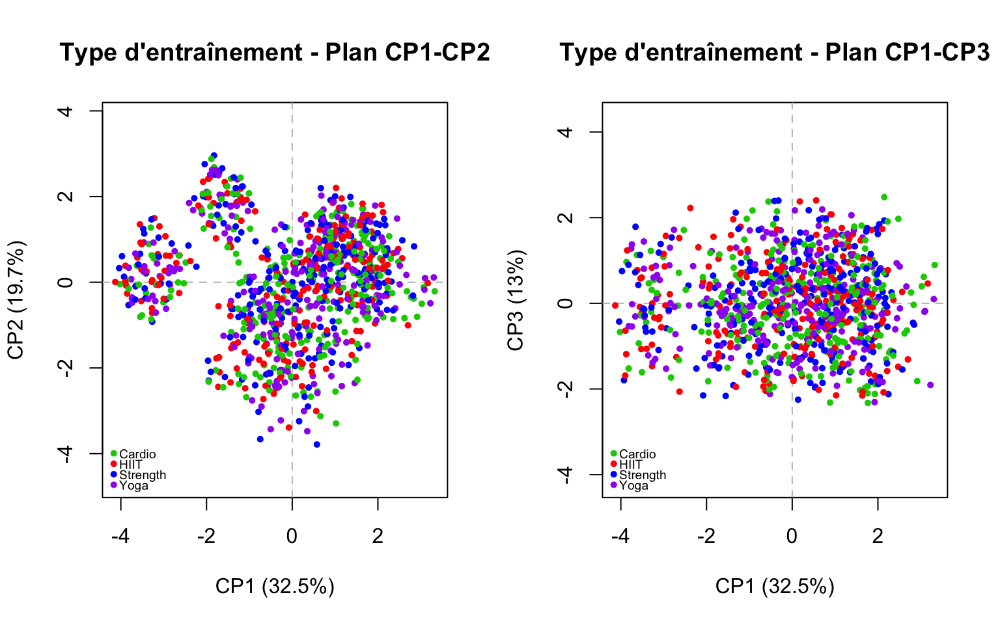
Aucune séparation nette n’est visible selon le type d’entraînement, ni sur CP1, ni sur CP2, ni sur CP3. Le type de sport ne semble donc pas structurer la dépense calorique dans ce jeu de données. Le nettoyage des variables ne change pas cette conclusion, ce qui rend l’observation robuste.
cols_exp <- c("1" = "lightblue", "2" = "orange", "3" = "darkred")
couleurs_exp <- cols_exp[as.character(gym$Experience_Level)]
par(mfrow = c(1, 2))
plot_acp_plan(1, 2, couleurs_exp,
"Niveau d'expérience - Plan CP1-CP2",
c("Niveau 1 - Débutant", "Niveau 2 - Intermédiaire", "Niveau 3 - Expert"),
cols_exp, pcts)
plot_acp_plan(1, 3, couleurs_exp,
"Niveau d'expérience - Plan CP1-CP3",
c("Niveau 1 - Débutant", "Niveau 2 - Intermédiaire", "Niveau 3 - Expert"),
cols_exp, pcts)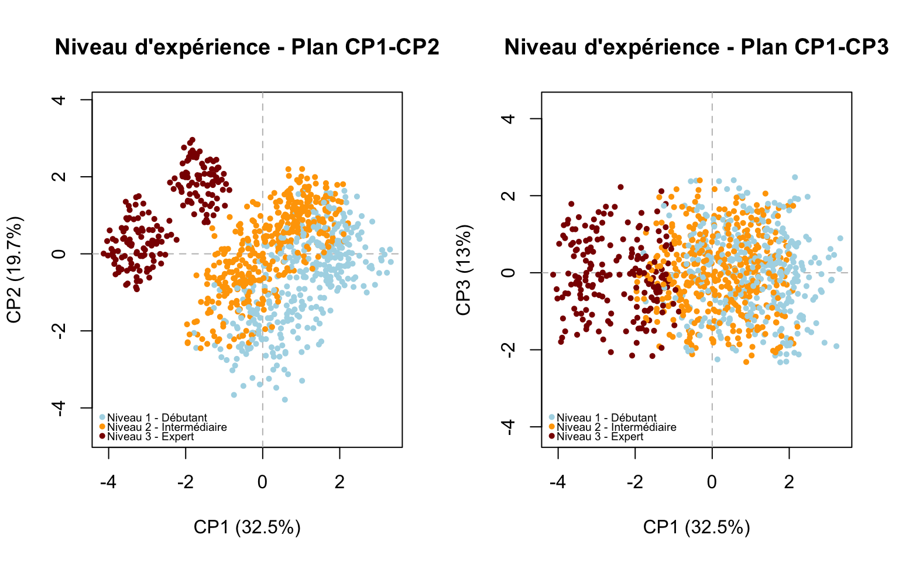
Le gradient débutants vers experts apparaît surtout sur CP1. Après nettoyage, cette séparation devient encore plus nette, ce qui confirme que l’axe 1 est un axe de performance et de condition physique. En revanche, CP3 ne discrimine pas le niveau d’expérience. L’âge et le BPM moyen ne définissent donc pas le niveau d’expertise dans cette population.
cols_cal <- c("Faible" = "gold", "Moderee" = "darkorange", "Haute" = "red3")
couleurs_cal <- cols_cal[gym$Calories_Class]
par(mfrow = c(1, 2))
plot_acp_plan(1, 2, couleurs_cal,
"Calories brûlées - Plan CP1-CP2",
c("Faible (<779)", "Modérée (779-1002)", "Haute (>1002)"),
cols_cal, pcts)
plot_acp_plan(1, 3, couleurs_cal,
"Calories brûlées - Plan CP1-CP3",
c("Faible (<779)", "Modérée (779-1002)", "Haute (>1002)"),
cols_cal, pcts)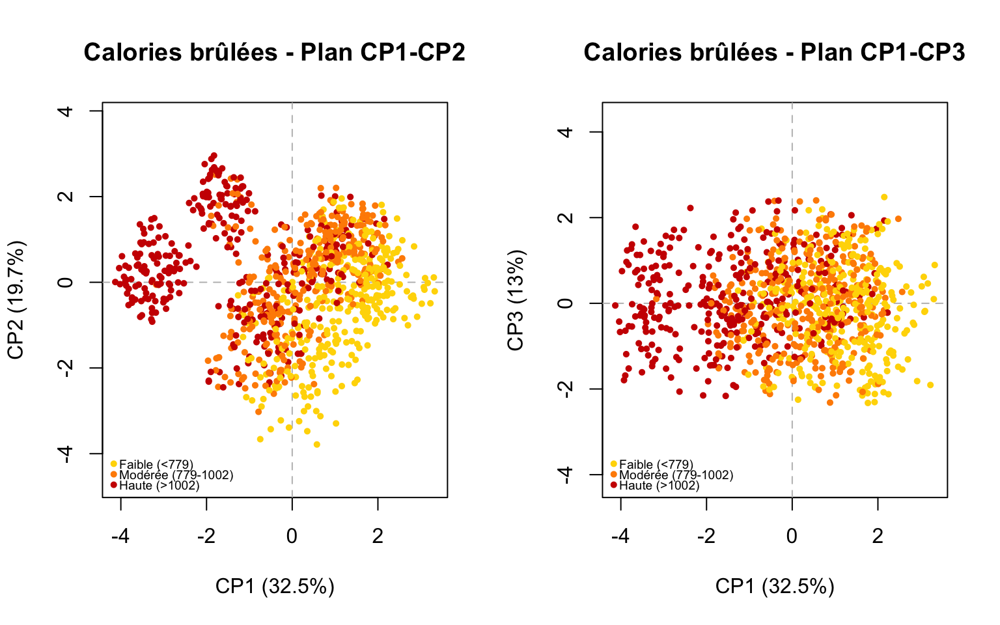
On observe un gradient net des classes de calories sur CP1, avec les dépenses élevées d’un côté et les dépenses faibles de l’autre. CP2 ne semble pas structurer les classes de calories. CP3 non plus. Cela suggère que la prédiction des calories repose surtout sur la dimension captée par CP1, ce qui justifie l’intérêt d’une méthode supervisée comme la PLS pour maximiser explicitement le lien avec la variable cible.
corvar <- cor(gymXCRsel, resacp$scores[, 1:3])
plot_cercle <- function(ax1, ax2, corvar, pcts) {
plot(
corvar[, ax1], corvar[, ax2],
xlim = c(-1, 1), ylim = c(-1, 1),
xlab = paste0("CP", ax1, " (", pcts[ax1], "%)"),
ylab = paste0("CP", ax2, " (", pcts[ax2], "%)"),
main = paste0("Cercle des corrélations - Plan CP", ax1, "-CP", ax2),
type = "n", asp = 1
)
angles <- seq(0, 2 * pi, length = 1000)
points(cos(angles), sin(angles), type = "l", col = "blue", lty = 2)
text(corvar[, ax1], corvar[, ax2], labels = colnames(gymXCRsel), cex = 0.8, col = "darkblue")
abline(h = 0, v = 0, lty = 2, col = "grey")
arrows(0, 0, corvar[, ax1] * 0.95, corvar[, ax2] * 0.95, length = 0.1, angle = 15)
}
par(mfrow = c(1, 2))
plot_cercle(1, 2, corvar, pcts)
plot_cercle(1, 3, corvar, pcts)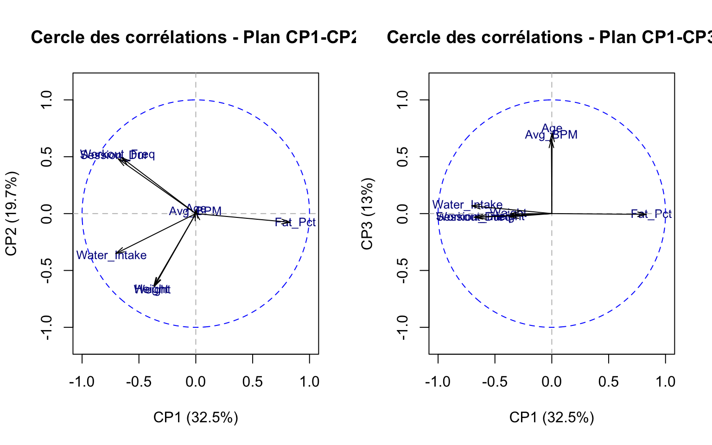
cat("Variables les plus corrélées à CP1 :\n")Variables les plus corrélées à CP1 :print(round(sort(corvar[, 1]), 3))Water_Intake Session_Dur Workout_Freq Height Weight Avg_BPM
-0.741 -0.719 -0.687 -0.389 -0.383 -0.004
Age Fat_Pct
0.003 0.875 cat("\nVariables les plus corrélées à CP3 :\n")
Variables les plus corrélées à CP3 :print(round(sort(corvar[, 3], decreasing = TRUE), 3)) Age Avg_BPM Water_Intake Weight Fat_Pct Height
0.745 0.689 0.072 -0.003 -0.007 -0.029
Session_Dur Workout_Freq
-0.033 -0.035 cat("\nVariables les plus corrélées à CP2 :\n")
Variables les plus corrélées à CP2 :print(round(sort(corvar[, 2], decreasing = TRUE), 3))Workout_Freq Session_Dur Age Avg_BPM Fat_Pct Water_Intake
0.519 0.508 0.039 0.016 -0.081 -0.370
Height Weight
-0.670 -0.673 Le nettoyage permet donc d’obtenir des axes plus cohérents et plus facilement interprétables. C’est le genre de chose qu’on est censé faire avant de raconter une histoire avec les résultats, pas après.
CP3 <- resacp$scores[, 3]
top_CP3 <- order(CP3, decreasing = TRUE)[1:10]
gym[top_CP3, c("Age", "Avg_BPM", "Gender", "Calories_Burned")] Age Avg_BPM Gender Calories_Burned
96 59 169 Female 441
666 58 169 Male 937
336 59 168 Male 1123
148 59 167 Male 885
312 58 168 Male 840
98 58 168 Male 1106
963 57 166 Male 1290
888 55 167 Male 637
913 55 168 Male 640
813 56 168 Male 1148distACP <- dist(resacp$scores[, 1:3])
hclustWard <- hclust(distACP, method = "ward.D2")
par(mfrow = c(1, 1))
plot(hclustWard, hang = -1, main = "CAH Ward sur scores ACP", labels = FALSE,
ylab = "Ultramétrique")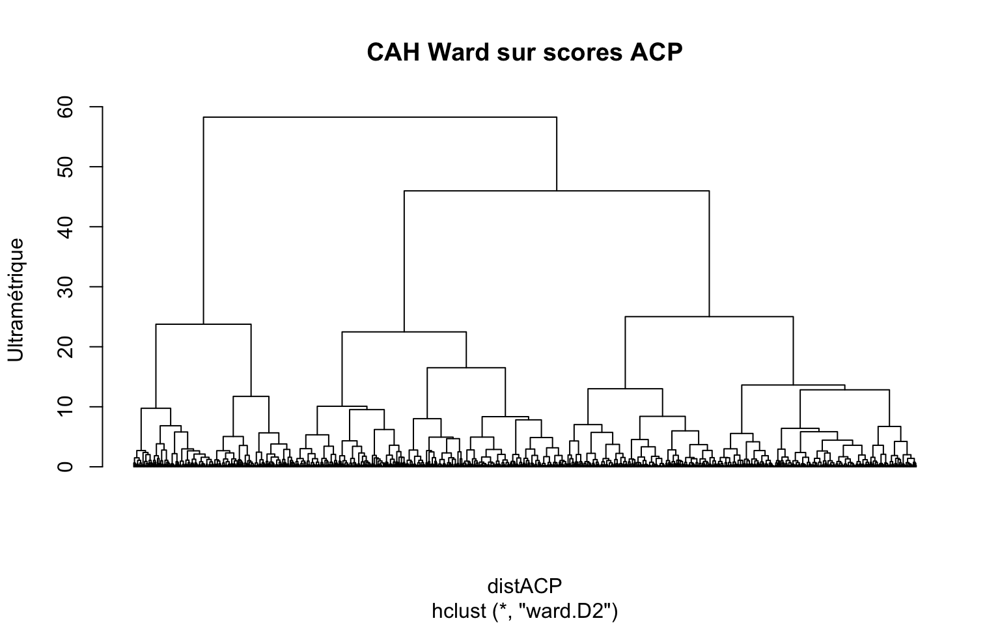
nbclust_ward <- NbClust(
data = resacp$scores[, 1:3],
distance = "euclidean",
min.nc = 2, max.nc = 10,
method = "ward.D2",
index = "ch"
)
par(mfrow = c(1, 1))
plot(
2:10, nbclust_ward$All.index,
type = "l",
xlab = "Nb de classes",
ylab = "Indice CH",
main = "Choix du nombre de classes (Calinski-Harabasz)"
)
abline(v = which.max(nbclust_ward$All.index) + 1, col = "red", lty = 2)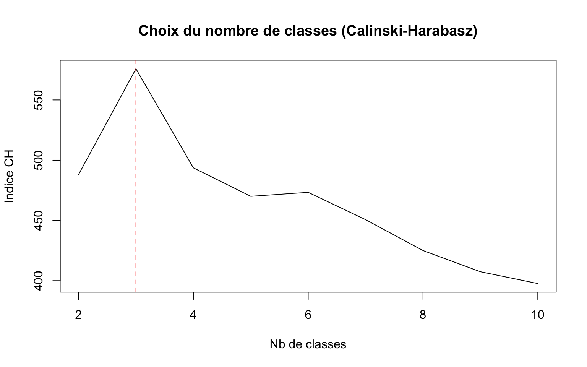
k_cah <- 3
groupeCAH <- cutree(hclustWard, k = k_cah)
table(groupeCAH)groupeCAH
1 2 3
201 434 338 par(mfrow = c(1, 1))
plot(hclustWard, hang = -1, main = paste("CAH Ward -", k_cah, "groupes"), labels = FALSE)
rect.hclust(hclustWard, k = k_cah)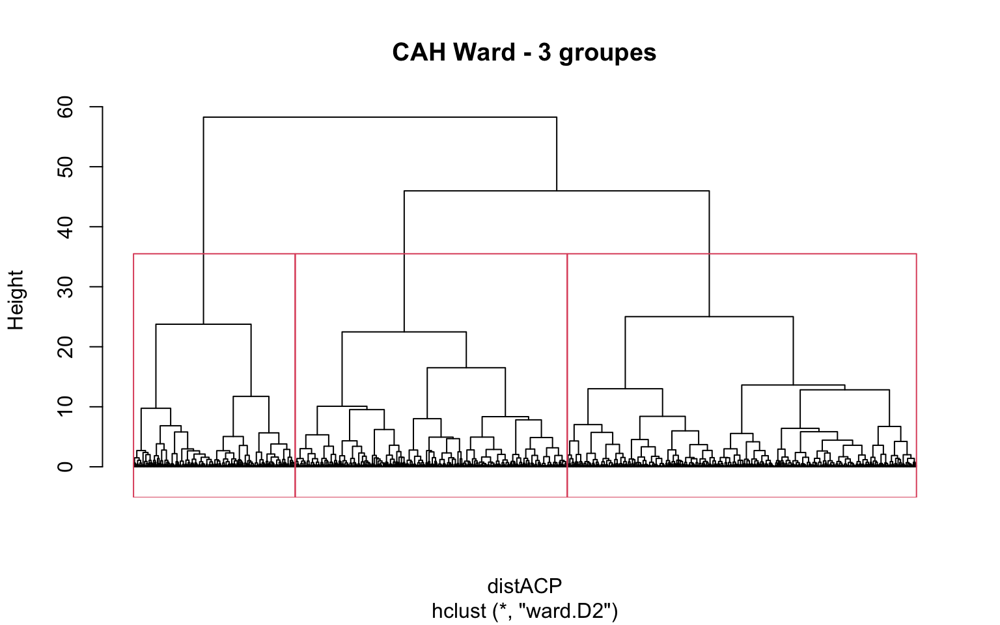
par(mfrow = c(1, 2))
plot(
resacp$scores[, 1], resacp$scores[, 2],
col = groupeCAH, pch = 16, cex = 0.7,
main = paste0("CAH ", k_cah, " groupes - Plan CP1-CP2"),
xlab = paste0("CP1 (", pct1, "%)"),
ylab = paste0("CP2 (", pct2, "%)")
)
abline(h = 0, v = 0, lty = 2, col = "grey")
legend("bottomleft", legend = paste("Profil", 1:k_cah), col = 1:k_cah, pch = 16,
cex = 0.6, pt.cex = 0.7, bty = "n", x.intersp = 0.5, y.intersp = 0.7, bg = "white")
plot(
resacp$scores[, 1], resacp$scores[, 3],
col = groupeCAH, pch = 16, cex = 0.7,
main = paste0("CAH ", k_cah, " groupes - Plan CP1-CP3"),
xlab = paste0("CP1 (", pct1, "%)"),
ylab = paste0("CP3 (", pct3, "%)")
)
abline(h = 0, v = 0, lty = 2, col = "grey")
legend("bottomleft", legend = paste("Profil", 1:k_cah), col = 1:k_cah, pch = 16,
cex = 0.6, pt.cex = 0.7, bty = "n", x.intersp = 0.5, y.intersp = 0.7, bg = "white")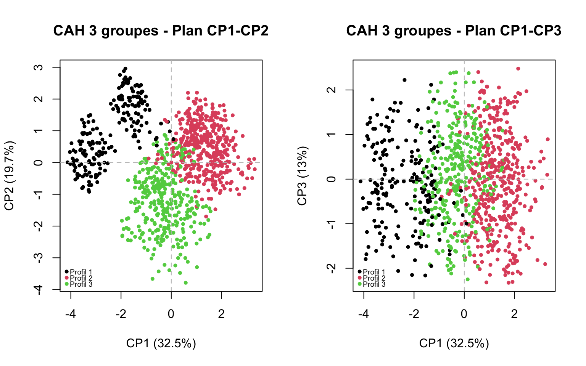
gymX_df <- as.data.frame(gymXCRsel)
gymX_df$Groupe <- as.factor(groupeCAH)
aggregate(. ~ Groupe, data = gymX_df, FUN = mean) Groupe Age Weight Height Avg_BPM Session_Dur
1 1 -0.03936261 -0.04393685 0.003563856 -0.06662592 1.4127523
2 2 -0.04211061 -0.60181402 -0.532551634 -0.02726540 -0.3893009
3 3 0.07747897 0.79887157 0.681689569 0.07463016 -0.3402563
Fat_Pct Water_Intake Workout_Freq
1 -1.56296308 0.7945455 1.2987034
2 0.70131383 -0.7730216 -0.3472737
3 0.02895082 0.5200821 -0.3263982table(gym$Gender, groupeCAH) groupeCAH
1 2 3
Female 92 356 14
Male 109 78 324table(gym$Workout_Type, groupeCAH) groupeCAH
1 2 3
Cardio 49 113 93
HIIT 50 100 71
Strength 48 123 87
Yoga 54 98 87table(gym$Experience_Level, groupeCAH) groupeCAH
1 2 3
1 0 217 159
2 10 217 179
3 191 0 0table(gym$Calories_Class, groupeCAH) groupeCAH
1 2 3
Faible 0 208 117
Moderee 24 171 129
Haute 177 55 92La CAH Ward sur les trois premiers axes ACP met en évidence trois profils distincts.
Le niveau d’expérience semble être la variable la plus structurante, tandis que la morphologie crée une partition secondaire au sein des non-experts.
gymDF <- data.frame(
gymXCRsel,
Gender = gym$Gender,
Workout_Type = gym$Workout_Type,
Exp_Level = gym$Experience_Level,
Calories_Class = gp
)resrpart <- rpart(
Calories_Class ~ .,
data = gymDF,
control = rpart.control(minsplit = 5)
)
par(xpd = NA, mfrow = c(1, 1))
plot(resrpart)
text(resrpart, use.n = TRUE, cex = 0.7)
title("Arbre CART 9 splits")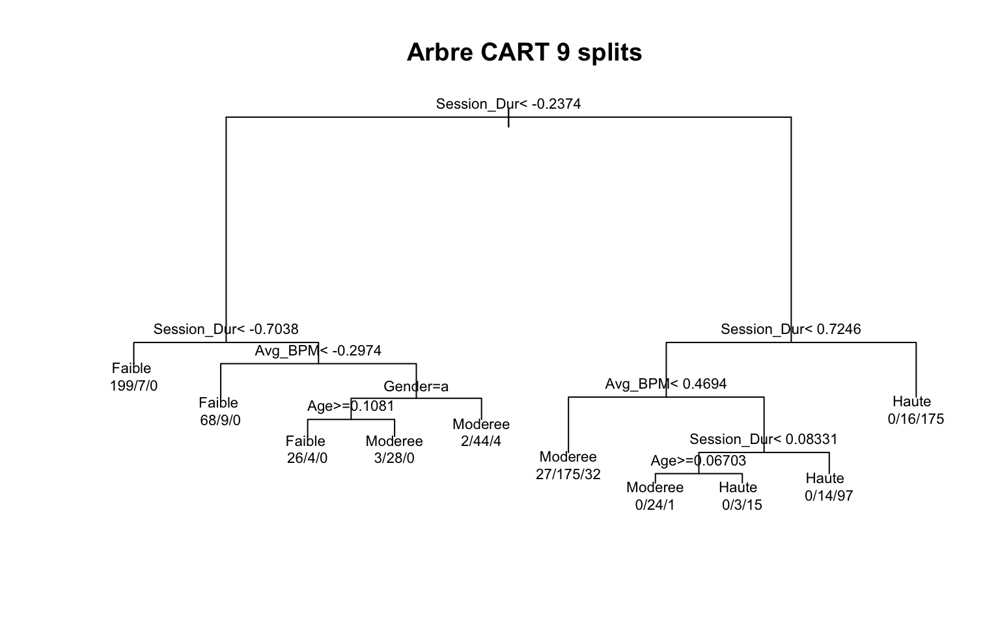
predCART <- predict(resrpart, type = "class")
mean(predCART == gp)[1] 0.8746146table(predCART, gp) gp
predCART Faible Moderee Haute
Faible 293 20 0
Moderee 32 271 37
Haute 0 33 287resrpart_complet <- rpart(
Calories_Class ~ .,
data = gymDF,
control = rpart.control(minsplit = 1, minbucket = 1, cp = 0)
)
par(xpd = NA, mfrow = c(1, 1))
plot(resrpart_complet)
text(resrpart_complet, use.n = TRUE, cex = 0.7)
title("Arbre CART complet")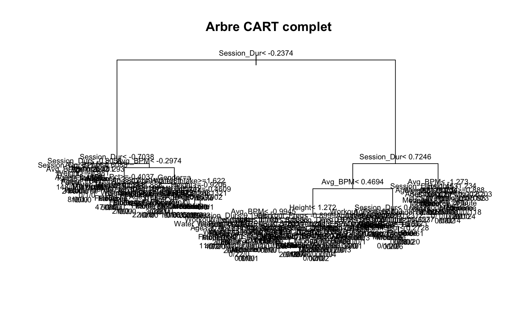
predCART_complet <- predict(resrpart_complet, type = "class")
mean(predCART_complet == gp)[1] 1table(predCART_complet, gp) gp
predCART_complet Faible Moderee Haute
Faible 325 0 0
Moderee 0 324 0
Haute 0 0 324printcp(resrpart)
Classification tree:
rpart(formula = Calories_Class ~ ., data = gymDF, control = rpart.control(minsplit = 5))
Variables actually used in tree construction:
[1] Age Avg_BPM Gender Session_Dur
Root node error: 648/973 = 0.66598
n= 973
CP nsplit rel error xerror xstd
1 0.452160 0 1.00000 1.06481 0.021862
2 0.110340 1 0.54784 0.55247 0.023214
3 0.034722 3 0.32716 0.36728 0.020692
4 0.017747 5 0.25772 0.29167 0.019044
5 0.016975 7 0.22222 0.27006 0.018488
6 0.010000 9 0.18827 0.24074 0.017662plotcp(resrpart)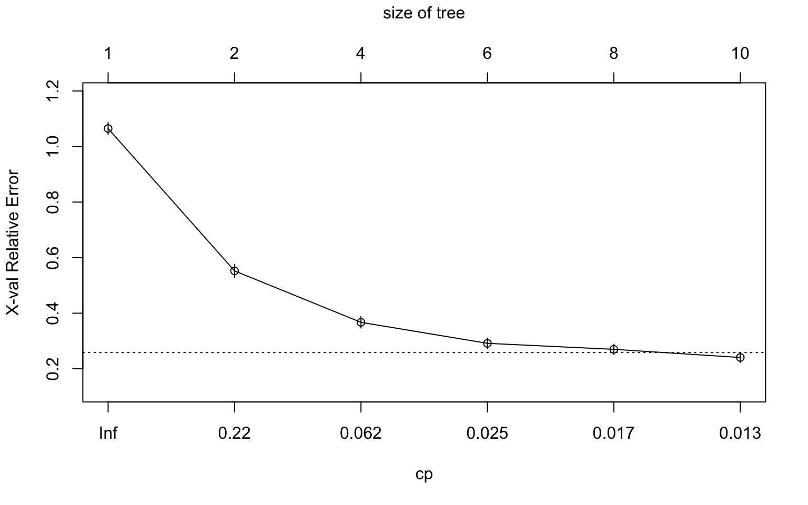
resrpart_lag <- prune(resrpart, cp = 0.01698)
par(xpd = NA)
plot(resrpart_lag)
text(resrpart_lag, use.n = TRUE, cex = 0.7)
title("Arbre CART élagué")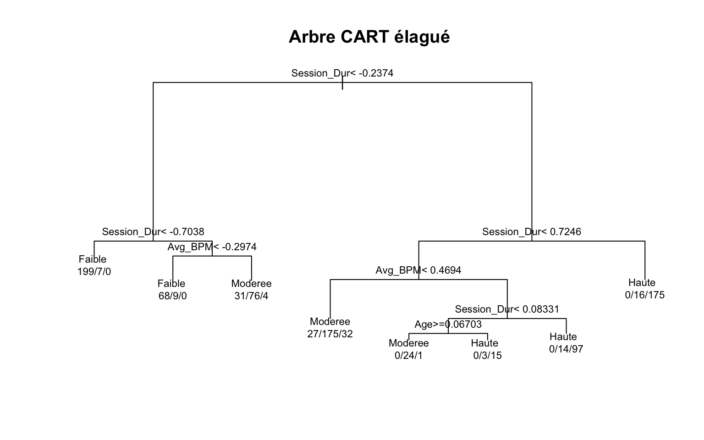
predCART_lag <- predict(resrpart_lag, type = "class")
mean(predCART_lag == gp)[1] 0.8520041table(predCART_lag, gp) gp
predCART_lag Faible Moderee Haute
Faible 267 16 0
Moderee 58 275 37
Haute 0 33 287L’arbre complet obtient 100% sur l’échantillon d’apprentissage. Cela ne prouve rien d’autre qu’un sur-ajustement maximal. Il a mémorisé les données. Félicitations à la machine pour avoir appris le corrigé par cœur.
L’arbre avec minsplit = 5 reste performant, mais le taux
mesuré sur l’apprentissage reste optimiste. La comparaison entre
rel error et xerror confirme un sur-ajustement
résiduel.
L’arbre élagué apporte un meilleur compromis entre parcimonie et performance. Les enseignements principaux sont :
Session_Dur apparaît comme variable dominante, dès le
noeud racine.Avg_BPM intervient en second pour affiner la zone
intermédiaire.Moderee reste la plus difficile à
isoler.Calories_BurnedgymDF_reg <- data.frame(
gymXCRsel,
Gender = gym$Gender,
Workout_Type = gym$Workout_Type,
Exp_Level = gym$Experience_Level,
Calories_Burned = gym$Calories_Burned
)resrpart_reg <- rpart(
Calories_Burned ~ .,
data = gymDF_reg,
method = "anova",
control = rpart.control(minsplit = 5)
)
par(xpd = NA)
plot(resrpart_reg)
text(resrpart_reg, use.n = FALSE, cex = 0.7)
title("Arbre CART régression - Calories brûlées")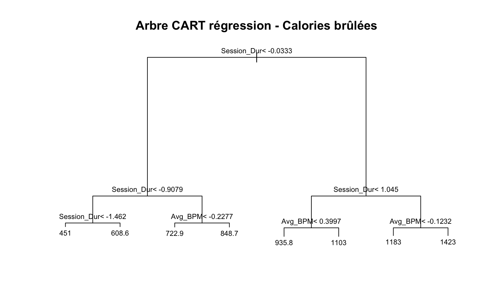
printcp(resrpart_reg)
Regression tree:
rpart(formula = Calories_Burned ~ ., data = gymDF_reg, method = "anova",
control = rpart.control(minsplit = 5))
Variables actually used in tree construction:
[1] Avg_BPM Session_Dur
Root node error: 72252061/973 = 74257
n= 973
CP nsplit rel error xerror xstd
1 0.544231 0 1.00000 1.00328 0.0448102
2 0.124786 1 0.45577 0.45709 0.0215884
3 0.105840 2 0.33098 0.34059 0.0142541
4 0.033752 3 0.22514 0.23717 0.0115340
5 0.030517 4 0.19139 0.21629 0.0110294
6 0.016054 5 0.16087 0.17460 0.0078619
7 0.014485 6 0.14482 0.16245 0.0076080
8 0.010000 7 0.13033 0.14598 0.0073522plotcp(resrpart_reg)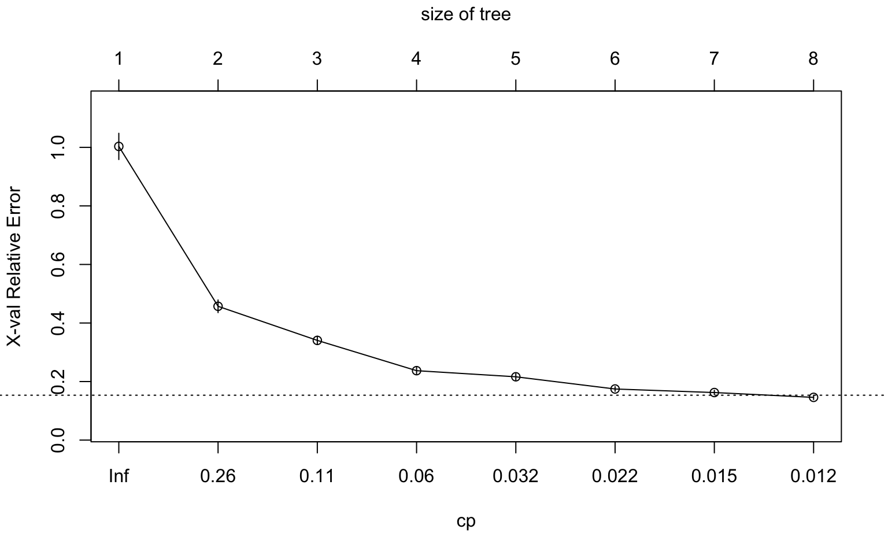
cp_reg <- resrpart_reg$cptable[which.min(resrpart_reg$cptable[, "xerror"]), "CP"]
resrpart_reg_lag <- prune(resrpart_reg, cp = cp_reg)
par(xpd = NA)
plot(resrpart_reg_lag)
text(resrpart_reg_lag, use.n = FALSE, cex = 0.7)
title("Arbre CART régression élagué")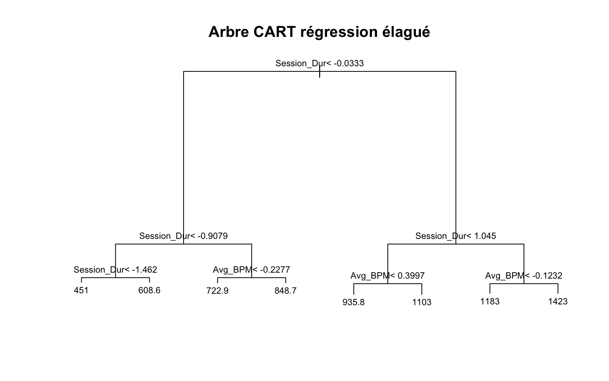
pred_reg <- predict(resrpart_reg_lag)
RMSE_cart <- sqrt(mean((gym$Calories_Burned - pred_reg)^2))
R2_cart <- cor(gym$Calories_Burned, pred_reg)^2
cat("RMSE :", round(RMSE_cart, 2), "\n")RMSE : 98.38 cat("R² :", round(R2_cart, 4), "\n")R² : 0.8697 cat("CP choisi automatiquement :", round(cp_reg, 6), "\n")CP choisi automatiquement : 0.01 Le premier critère de partage reste la durée de séance. Le signal est
simple et très cohérent : plus la séance est longue, plus la dépense
calorique augmente. Avg_BPM vient ensuite raffiner la
prédiction au sein de chaque tranche de durée.
L’intérêt de l’arbre de régression est qu’il donne directement des niveaux de calories attendus, donc des profils interprétables en valeur brute, et pas seulement des classes.
set.seed(42)
resRF <- randomForest(
Calories_Class ~ .,
data = gymDF,
ntree = 500,
importance = TRUE
)
print(resRF)
Call:
randomForest(formula = Calories_Class ~ ., data = gymDF, ntree = 500, importance = TRUE)
Type of random forest: classification
Number of trees: 500
No. of variables tried at each split: 3
OOB estimate of error rate: 10.38%
Confusion matrix:
Faible Moderee Haute class.error
Faible 299 26 0 0.08000000
Moderee 23 281 20 0.13271605
Haute 0 32 292 0.09876543predRF <- predict(resRF)
mean(predRF == gp)[1] 0.8961973table(predRF, gp) gp
predRF Faible Moderee Haute
Faible 299 23 0
Moderee 26 281 32
Haute 0 20 292par(mfrow = c(1, 1))
varImpPlot(resRF, main = "Importance des variables - Random Forest", cex = 0.8)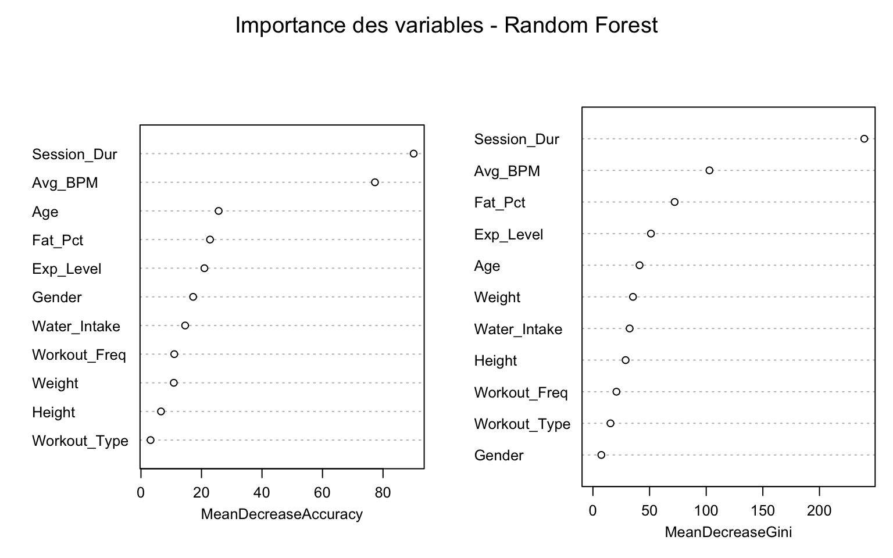
importance_tri <- importance(resRF)
importance_tri[order(importance_tri[, "MeanDecreaseGini"], decreasing = TRUE), ] Faible Moderee Haute MeanDecreaseAccuracy
Session_Dur 126.156313 59.413942 44.509702 90.124644
Avg_BPM 39.654995 52.061258 61.218433 77.334205
Fat_Pct 19.388219 10.916417 20.504837 22.819515
Exp_Level 21.943388 8.445452 15.746658 20.968032
Age 14.810057 15.421589 18.702150 25.670046
Weight 6.619420 5.520719 6.826151 10.850496
Water_Intake 11.905175 5.680248 10.183063 14.600460
Height 1.305872 5.363074 3.673107 6.622919
Workout_Freq 11.825777 1.165844 7.592036 11.005880
Workout_Type 0.420037 2.158791 2.751433 3.168874
Gender 12.472412 13.003491 7.454346 17.237792
MeanDecreaseGini
Session_Dur 239.551363
Avg_BPM 102.870469
Fat_Pct 72.132096
Exp_Level 51.224406
Age 41.150310
Weight 35.363440
Water_Intake 32.404326
Height 28.867695
Workout_Freq 20.760333
Workout_Type 15.515732
Gender 7.422062plot(resRF, main = "Erreur OOB selon le nombre d'arbres")
legend("topright", legend = c("OOB", levels(gp)),
col = 1:(length(levels(gp)) + 1), lty = 1, cex = 0.8)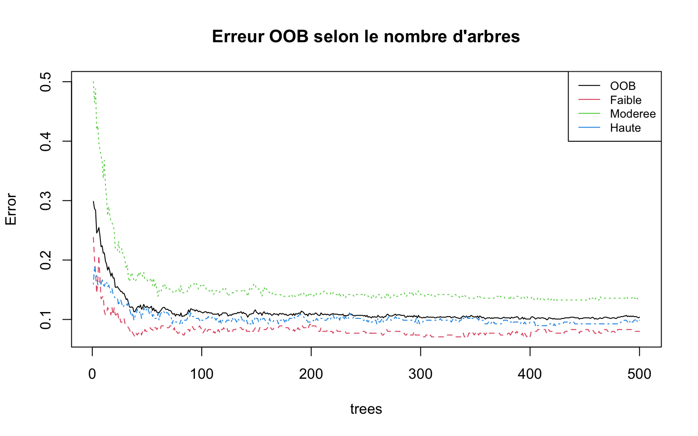
La Random Forest confirme la hiérarchie observée avec le CART tout en révélant mieux les variables secondaires.
Les conclusions attendues sont les suivantes :
Session_Dur est la variable dominante.Avg_BPM est le second déterminant.Fat_Pct et Exp_Level jouent aussi un rôle,
moins visible dans un arbre simple.Workout_Type a un poids très faible, ce qui rejoint les
résultats de l’ACP.La RF améliore en général la performance par rapport au CART élagué, tout en limitant le sur-ajustement grâce à l’évaluation OOB.
Le nettoyage des variables est justifié à la fois sur le plan
statistique et interprétatif. En retirant BMI,
Max_BPM et Resting_BPM, on obtient :
Le message principal du jeu de données est clair :
Les sections suivantes peuvent être ajoutées dans ce même
.Rmd si vous souhaitez compléter la démarche analytique
:
Calories_Burned
sessionInfo()R version 4.5.3 (2026-03-11)
Platform: aarch64-apple-darwin20
Running under: macOS Ventura 13.6.3
Matrix products: default
BLAS: /Library/Frameworks/R.framework/Versions/4.5-arm64/Resources/lib/libRblas.0.dylib
LAPACK: /Library/Frameworks/R.framework/Versions/4.5-arm64/Resources/lib/libRlapack.dylib; LAPACK version 3.12.1
locale:
[1] en_US.UTF-8/en_US.UTF-8/en_US.UTF-8/C/en_US.UTF-8/en_US.UTF-8
time zone: Europe/Paris
tzcode source: internal
attached base packages:
[1] stats graphics grDevices utils datasets methods base
other attached packages:
[1] NbClust_3.0.1 randomForest_4.7-1.2 rpart_4.1.24
[4] pls_2.9-0 MASS_7.3-65
loaded via a namespace (and not attached):
[1] vctrs_0.7.1 cli_3.6.5 knitr_1.51 rlang_1.1.7
[5] xfun_0.56 stringi_1.8.7 otel_0.2.0 promises_1.5.0
[9] jsonlite_2.0.0 workflowr_1.7.2 glue_1.8.0 rprojroot_2.1.1
[13] git2r_0.36.2 htmltools_0.5.9 httpuv_1.6.16 sass_0.4.10
[17] rmarkdown_2.30 jquerylib_0.1.4 evaluate_1.0.5 tibble_3.3.1
[21] fastmap_1.2.0 yaml_2.3.12 lifecycle_1.0.5 stringr_1.6.0
[25] compiler_4.5.3 fs_1.6.7 Rcpp_1.1.1 pkgconfig_2.0.3
[29] rstudioapi_0.18.0 later_1.4.8 digest_0.6.39 R6_2.6.1
[33] pillar_1.11.1 magrittr_2.0.4 bslib_0.10.0 tools_4.5.3
[37] cachem_1.1.0